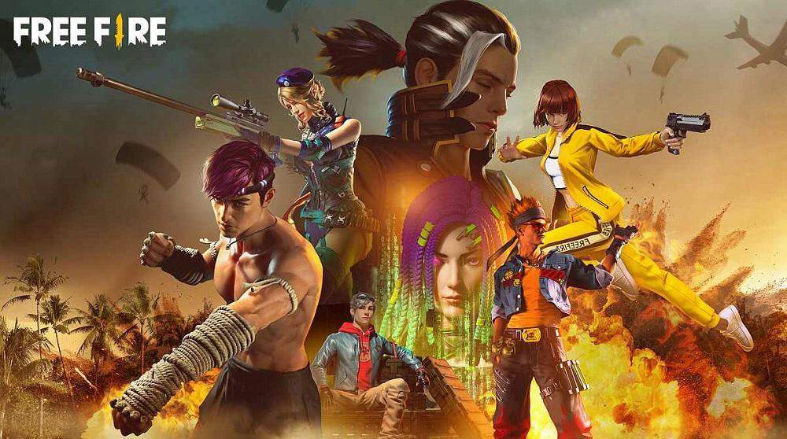

مرحباً بك في موقع ℳ3𝒟-ℱ𝓇𝑒𝑒_ℱ𝒾𝓇𝑒
معلومات عن Free Fire
Free Fire هي لعبة باتل رويال سريعة الوتيرة تجمع اللاعبين في ساحة معركة افتراضية... [جارينا فري فاير (بالإنجليزية: Garena Free Fire) وتعرف اختصارًا فري فاير هي لعبة باتل رويال من تطوير 111 دوتس ستوديو ونشر شركة غارينا وتم إصدارها في 4 ديسمبر 2017. أصبحت اللعبة الأكثر تحميلًا للجوّال لعام 2019، نظرًا لشعبيتها، حصلت اللعبة على جائزة «أفضل لعبة شعبية» في تصويت من متجر جوجل بلاي في عام 2019. اعتبارًا من نوفمبر 2019، حققت فري فاير أكثر من مليار دولار في جميع أنحاء العالم. اللعبة تحتوي على خمسين لاعب ينزلون متفرقين في خريطة اللعبة بحثاً عن الموارد والأسلحة لقتل الأعداء الذين يعترضونهم وللبقاء كآخر شخص حي في الجزيرة. في فبراير 2019، بلغت فري فاير أكثر من 500 مليون تحميل في أجهزة الأندرويد، لتصبح أحد أكثر ألعاب الأندرويد تحميلاً في سنة 2019 . وفي 2020 تم إصدار نسخة ثانية من فري فاير سميت بفري فاير ماكس ويستطيع أن يلعبها من لديهم هواتف قوية والاستمتاع بجودة جرافيك أقوى وغير ذلك، أصبحت متاحة عند منطقة الشرق الأوسط (أي المنطقة العربية بصفة عامة) في 8 يونيو 2021 بعد تحديث الإبادة. وفي أغسطس 2021، تخطت فري فاير حاجز مليار عملية تحميل على جوجل بلاي خلال الذكرى السنوية الرابعة للعبة. أسلوب اللعب فري فاير هي لعبة على الإنترنت فقط العمل مغامرة لعبة معركة رويال عبت في شخص ثالث منظور. تتكون اللعبة من ما يصل إلى 50 لاعبًا يسقطون من مظلة في جزيرة بحثًا عن أسلحة ومعدات لقتل اللاعبين الآخرين. اللاعبون أحرار في اختيار موقع البداية، وأخذ الأسلحة والإمدادات لإطالة عمر معركتهم. عندما ينضم اللاعبون إلى لعبة ما، سيدخلون طائرة ستطير فوق الجزيرة. أثناء تحليق الطائرة فوق الجزيرة، يمكن للاعبين القفز حيث يريدون، مما يسمح لهم باختيار مكان استراتيجي للهبوط بعيدًا عن الأعداء. بعد الهبوط، يجب على اللاعبين البحث عن أسلحة وأدوات نفعية. يمكن العثور على المعدات الطبية والأسلحة المتوسطة والكبيرة والقنابل اليدوية وغيرها من العناصر المميزة في جميع أنحاء الجزيرة. الهدف النهائي للاعبين هو البقاء على قيد الحياة على الجزيرة بحد أقصى 50-51 لاعبًا عبر الإنترنت؛ هذا يتطلب القضاء على جميع الخصوم الذين يواجههم اللاعبون على طول الطريق والتأكد من أنهم الناجي الوحيد المتبقي. تتقلص المنطقة الآمنة المتاحة لخريطة اللعبة بمرور الوقت، مما يوجه اللاعبين الباقين على قيد الحياة إلى مناطق أكثر إحكامًا لفرض المواجهات. آخر لاعب أو فريق يقف يفوز بالجولة. استقبال تم وصف الرسومات على أنها «مفيدة للهواتف ذات المواصفات المتوسطة والمنخفضة»، ولكن صرح أحد المراجعين أنه «إذا كانت الألعاب ذات الرسومات الجيدة هي الشيء الذي تفضله، فغير موصى بلعب لعبة فري فاير وعمر الشخص أقل من 12 سنة. ولكن إذا كان الشخص يحب ألعاب الباتل رويال وعمره يزيد عن 16 سنة، فعليك بالتأكيد اللعب.» علق تي كارفالهو من تيش تيدو أن فري فاير «تعطي الأولوية للأداء، مما يجعلها خيارًا رائعًا لأي نوع من الأجهزة. تبرز طريقة اللعب وتحتوي على محتوى كافٍ للترفيه وتقديم قتال مجزي». وبخصوص تطور الشخصيات والمهارات، قالت إنها «إضافة مبهرجة». في قائمة جوجل بلاي السنوية لـ «أفضل تطبيقات العام»، فازت فري فاير في فئة «أفضل لعبة تصويت شعبية» لعام 2019، كونها الأكثر تصويتًا في البرازيل وتايلاند. تعد فري فاير واحدة من أشهر ألعاب باتل رويال للجوال، خلف ببجي موبايل و فورتنايت باتل رويال وكول أوف ديوتي: موبايل. تحظى بشعبية خاصة في أمريكا اللاتينية والهند وجنوب شرق آسيا. كانت فري فاير رابع أكثر الألعاب تنزيلًا على متجر جوجل بلاي في الربع الأخير من عام 2018، وكانت رابع أكثر الألعاب تنزيلًا في جميع أنحاء العالم في عام 2018 على iOS ومتجر جوجل بلاي ستور معًا. حصل العنوان على ما يقرب من 182 مليون عملية تنزيل في عام 2018، مما يجعله ثاني أكثر ألعاب باتل رويال للجوال تنزيلًا (أعلى من فورتنايت وخلف ببجي موبايل فقط)، وحقق أرباحًا تقارب 19.3 دولارًا. مليون دولار في الإيرادات الشهرية حتى ديسمبر 2018، ليصبح نجاحًا ماليًا كبيرًا لشركة غارينا. اعتبارًا من فبراير 2020، أصبح لدى فري فاير 500 مليون عملية تنزيل على متجر جوجل بلاي. في نهاية الربع الأول من عام 2021، تجاوزت فري فاير إيرادات ببجي موبايل في الولايات المتحدة، حيث حققت 100 مليون دولار من المبيعات مقارنة بـ 68 مليون دولار لـببجي. قفزت عائدات فري فاير بمقدار 4.5 أضعاف مقارنة بالفترة نفسها من العام السابق. الأطوار اللعبة هي لعبة باتل رويال من منظور الشخص الثالث وعند الدخول اللعبة يجد اللاعب عدة أطوار وهي: الطور الكلاسيكي والوضع المصنف بعد اختيار أحد الطورين وتحديد الوضع الذي يريد ان يلعب به اللاعب (وحيد، مجموعة، ثنائي) يجد اللاعب نفسه في طائرة مع خمسين لاعب ثم ينزل من الطائرة وعليه البحث عن الأسلحة والموارد اللازمة ويعترض أثناء ذلك خصوم عليه قتلهم لضمان البقاء على قيد الحياة وكما يحاول الذهاب لدائرة الحماية للاحتماء من المنطقة الخطرة. في النهاية يتواجه اللاعب مع آخر شخص معه في الخريطة (بيرمودا أو كالاهاري) وآخر شخص أو ثنائي أو مجموعة تبقى تكون الفائزة (على الاقل واحد في المجموعة). طور كلاش سكواد بعد اختيار هذا الطور يتم تحويل اللاعب مباشرة إلى حلبة قتال مصغرة بين فريقين من اربع لاعبين ويمر القتال من سبع جولات والرابح من يفوز أولاً بأربع جولات، وهو يتكون من طورين: كلاش سكواد وكلاش سكواد-المصنف الذي تم إصداره في غشت 2019، وأطلق بشكل دائم في دجنبر 2019 طور التدريب بعد اختيار هذا الطور، يتم وضع اللاعب منطقة لشراء الأسلحة والمعدات، وبعدها تتواجد منطقتان الأولى ساحة القتال والثانية ساحة التعارف، فتحتوي ساحة القتال غالبا على 15 لاعب وتستخدم للتدريب أو القتال مع اللاعبين الآخرين، وعند الموت يمكن إعادة اللعب مرة أخرى كل مرة يقتل. أهم شراكات فري فاير شراكة مع ألوك طالع أيضًا: ألوك ألوك دي جي برازيلي مشهور عالميًا قام بعقد شراكة مع فري فاير في نوفمبر 2019، وهي أول شراكة في عالم فري فاير، ويعتبر حاليًا أقوى شخصية في شخصيات فري فاير بفضل ميزته الجيدة. ميزته ينشئ هالة 5 متر تزيد من سرعة الحركة بنسبة 15 في المئة، واستعادة 5 نقاط صحة كل ثانية. شراكة مع كشمر طالع أيضًا: كشمر (دي جي) تعاقدت شركة غارينا العالمية للألعاب النقاب مع المنتج الموسيقى مع ناليس هولويلدهار (Niles hollowell Dhar)، والمعروف فنياً باسم (كشمر) ليكون أحدث سفير للعبة فري فاير. تتضمن الشراكة بين غارينا وكشمر دي جي تقديم أغنية حصرية، وفيديو موسيقي، وشخصية يمكن تشغيلها داخل اللعبة. ميزته زيادة 150 نقطة صفراء، وتحويل 5 منها إلى نقاط صحة كل ثانية. شراكة مع كريستيانو رونالدو طالع أيضًا: كريستيانو رونالدو شخصية كرونو تتبع للاعب كرة القدم كريستيانو رونالدو، قام بعقد شراكة مع فري فاير والتي تم الإعلان عنها في ديسمبر 2020، ويعتبر الحدث من أقوى الأحداث التي مرت في تاريخ فري فاير من كثرة الجوائز المجانية. ميزته تسمى ميزة أو قدرة الشخصية الجديدة كرونو بـ «حقل قوة» أو «مجال القوة» حيث سيتمكن اللاعب بشكل مباشر من منع الضرر من الخصوم رغم أطلاق النار، وذلك بعمل منطقة حماية تحيط بالشخصية لمدة محددة، وبالتالي عدم تلقي الضرر، وزيادة سرعة الحركة بنسبة 15 فالمئة. شراكة مع سكايلر هذه الشخصية مستوحاه من الفنان الفيتنامي سونغ وونغ. ميزته تكسير خمس جدار غلو متتالية، واستعادة 42 نقاط صحة كلما تم وضع جدار. الرياضات الإلكترونية في فبراير 2021، أعلنت غارينا عن بطولة العالم لفري فاير مع مجموعة الجوائز بقيمة 2 مليون دولار، والتي عقدت في مايو 2021 في سنغافورة. في عام 2020، تم استبدال بطولة العالم لفري فاير بسلسلة فري فاير كونتيننتال بسبب جائحة كوفيد-19.]
بروفايلي
الأسلحة
MP40: رشاش خفيف وفعال على المدى القصير
AK: بندقية قوية ودقيقة على المدى المتوسط
M1014: بندقية شوتغان ذات ضرر عالي عن قرب
AWM: قنص بعيد المدى مع قوة عالية
G18: مسدس سريع مناسب للمواجهة القصيرة
أطوار اللعب
- Classic
- Ranked
- Clash Squad
- Special Events